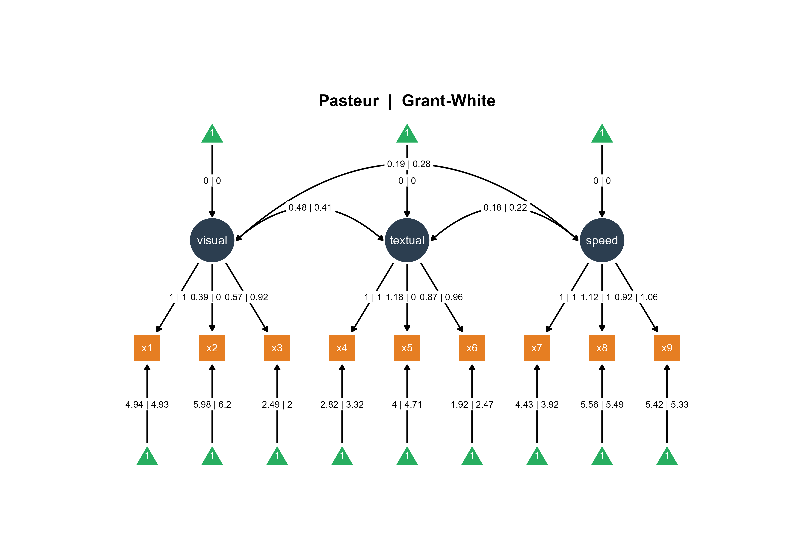
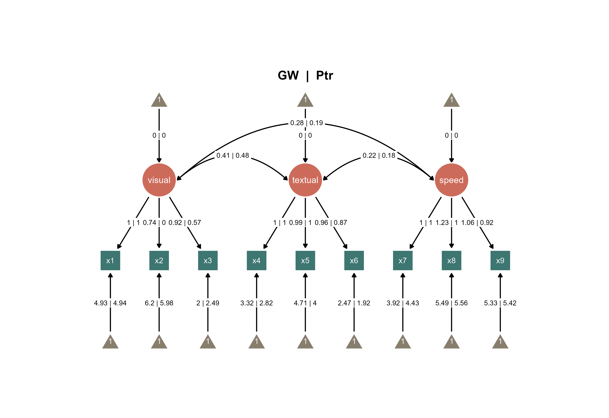

Instead of starting with a blank canvas using ggsem(), you can pre-load multiple model and visualization objects to launch the app with existing content. There are three main approaches for working with multiple groups for lavaan objects using the pipe |> operator (or %>%). Some descriptions of these functions have already been descripted in Chapter 1:
Approach 1: Single Multi-Group Model
This method uses lavaan’s built-in multi-group functionality, which is ideal for measurement invariance testing.
Use case: Single multi-group model object where ggsem automatically extracts group-specific parameters.
lavaan 0.6-21 ended normally after 57 iterations
Estimator ML
Optimization method NLMINB
Number of model parameters 60
Number of observations per group:
Pasteur 156
Grant-White 145
Model Test User Model:
Test statistic 115.851
Degrees of freedom 48
P-value (Chi-square) 0.000
Test statistic for each group:
Pasteur 64.309
Grant-White 51.542
Model Description: A single multi-group SEM object where the three-factor CFA is estimated separately for each school, allowing direct comparison of parameters across groups within one unified model framework.
ggsem_builder() |>add_group(name ="Pasteur", object = fit, x =-35) |>add_group(name ="Grant-White", object = fit, x =35) |>launch()
Visualization: ggsem automatically extracts group-specific parameters from the multi-group model and positions the Pasteur school diagram on the left (x = -35) and Grant-White on the right (x = 35) for side-by-side comparison.
Figure 1. Two SEM diagrams side-by-side with unique color palettes.
You can also combine the two SEMs into one SEM diagram.
Figure 2. Combine the two SEMs across groups into one diagram
If you add the title automatically using options in Aesthetic Grouping (see Chapter 16), this is the output:

Figure 3. A combined SEM diagrams with automatically generated title.
Approach 2: A Multi-Group Model with Pre-made Visualizations
This approach combines the statistical benefits of a multi-group model with customized visual layouts from semPlot.
Use case: Pre-rendered diagrams for each group with explicit group-level specification using one model.
Visualizations: The multi-group semPaths output is split into two separate plot objects (sem_paths1 and sem_paths2), each containing the pre-rendered diagram for one school group with parameter estimates displayed.
ggsem_builder() |>add_group("Ptr", model = fit, object = sem_paths1, x =-35, level ="Pasteur") |>add_group("GW", model = fit, object = sem_paths2, x =35, level ="Grant-White") |>launch()
Integration: Uses the same multi-group model object but with pre-rendered visualizations. The level parameter explicitly maps each diagram to its corresponding group in the model, ensuring the correct parameter estimates are displayed despite using identical model objects for both visualizations.
Figure 4. Two SEM diagrams side-by-side with unique color palettes with slightly tilted orientations (+/- 5 degrees).
With this approach, you can also combine the two SEMs as shown in Figure 2.

Figure 5. A combined SEM diagrams with automatically generated title.
Approach 3: Separate Single-Group Models
This method treats each group as completely independent, fitting separate models to subsetted data.
Use case: Completely independent models fitted to subgroup data.
Analysis Workflow: The dataset is split into school-specific subsets, then identical three-factor CFA models are fitted independently to each school’s data, creating completely separate model and visualization objects with school-specific parameter estimates.
ggsem_builder() |>add_group("Ptr", model = fitP, object = sem_pathsP, x =-35) |>add_group("GW", model = fitGW, object = sem_pathsGW, x =35) |>launch()
Figure 6. Two SEM diagrams side-by-side with automatically generated titles.
Comparison: The interactive application positions the independently fitted Pasteur and Grant-White models side-by-side, allowing visual comparison of parameter estimates that were calculated separately for each school without multi-group constraints.
With this approach, you can also combine the two SEMs as shown in Figure 2.
Figure 7. A combined SEM diagrams with automatically generated title and a different layout (spring)
Mix and Match
You can also upload unrelated multiple objects (SEM and networks) using add_group by specifying type argument in add_group():
# Non-runnable code as variables are not properly defined# Plot SEM and Network togetherggsem_builder() |>add_group("SEM", object = fitP, x =-35, type ="sem") |>add_group("Network", object = igraph_object, x =35, type ="network") |>launch()
If you pre-load different types of objects (even if they are both SEMs) that have different layouts/nodes/edges etc, you cannot combine the two SEMs as shown in Figure 2.